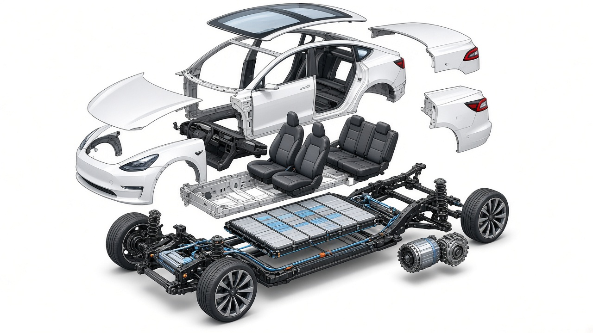
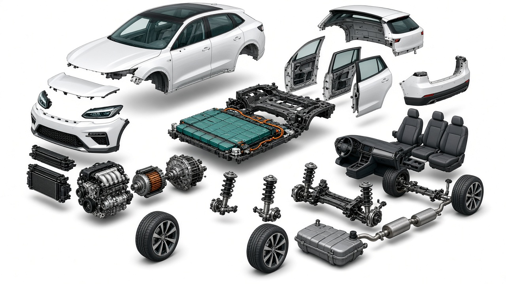
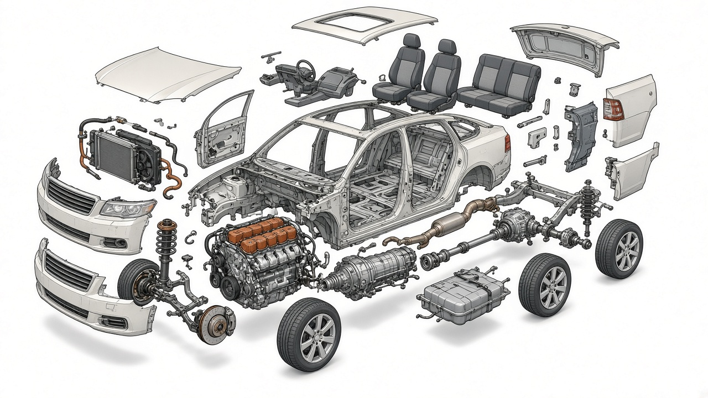

En sprängskiss visar hur delarna hänger ihop när bilen är plockad isär
i luften. Här jämför jag elbil, hybrid och förbränningsmotor i den
ordningen.
Elbil · sprängskiss · olika komponenter

Sprängskiss av en elbil, till exempel en Tesla. Batteripacket ligger
i golvet, elmotorn sitter vid axeln, och karossen är lyft så att du
ser chassi, säten och fjädring.
Hybrid · sprängskiss · olika komponenter

Sprängskiss av en hybrid. Här finns både en mindre
förbränningsmotor och en elmotor, plus ett batteripack, bränsletank
och växellåda som delar kraften mellan dem.
Förbränningsmotor · sprängskiss · olika komponenter

Sprängskiss av en bil med förbränningsmotor. Motorn sitter framtill,
följd av växellåda, drivaxel, avgassystem, kylare och bränsletank.
Ingen eldrivlina, bara den klassiska kedjan.